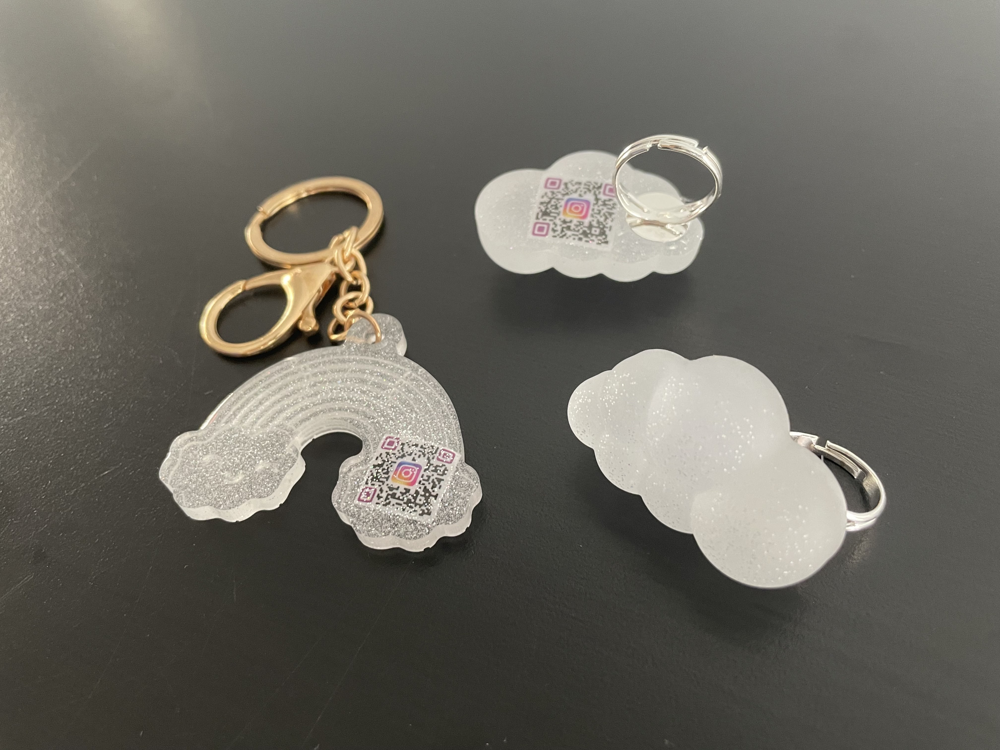

Creative Director | Lead Designer & Developer | Artist
Feb - Apr (2 months)
"My Anxious Shell" is an interactive video sculpture embodying how anxiety manifests in my body. As you approach the sculpture, it goes into panic mode. Opening the door of the sculpture, organs in distress are revealed. People can calm the sculpture down by hovering their hands over the heart. After interacting with the sculpture, I hope that people with anxiety walk away feeling less alone and people without anxiety walk away with greater empathy.
"My Anxious Shell" is a part of a bigger project "Anxiety, I acknowledge you." This entire project was exhibited at the ITP Spring Show 2023, which is a 2-day exhibition with a foot traffic of over a thousand people each day.
CONTEXT
“Anxiety, I acknowledge you” is my first acknowledgement of the chronic anxiety that I experience daily through 2 pieces. The first piece, “My Anxious Shell”, is an interactive video sculpture embodying how anxiety manifests in my body. I hope to show this sculpture in multiple mental health themed exhibitions where people can experience my anxiety with me. The second piece, “we.AR.anxious”, are bespoke pieces of augmented reality wearables I created from rings to keychains that aim to help with anxiety.
My Anxious shell
As you approach the sculpture, it goes into panic mode. Opening the door of the sculpture, organs in distress are revealed. I used multiple sensors, Arduino and serial communication with Unity to achieve this reveal effect. The animations of the heart getting stabbed, lungs trapped in plastic wrap and a ring like object squeezing the stomach portray how anxiety feels in my body. I created these animations in Cinema4D and used Unity as the platform to make it interactive. Sometimes, putting a hand on my heart helps, not just physically but also metaphorically getting support from people around me. Hence, I wanted to mimic this interaction by using LEAP motion to allow people interacting with the sculpture to hover their hands over the heart, calming the organs down.
Anxious Shell Demo
During usertesting, I found that users were unsure if they were supposed to open the door when it is blinking red, aka in 'panic mode'. Hence, I added a code snippet that would repeat me saying "open the door to see how I feel" until someone opens the door. This simple instruction was very effective as I noticed people engaging with the sculpture without asking me if they could open the sculpture.
H
Many people resonated with the video sculpture and really appreciated my work. It made me feel like I was not alone in my anxiety and it was extremely heartwarming. There was also interest to have this exhibit in mental health themed exhibitions which was my initial goal! I'm excited to show my sculpture in more of these spaces and I hope that more people with anxiety walk away feeling less alone and people without anxiety walk away with greater empathy.
we.AR.anxious
I wanted to also create something that would help me and potentially other people when they are anxious. Hence for the second part of the project, I created we.AR.anxious, bespoke pieces of augmented reality wearables from rings to keychains that aim to help with anxiety. Research has shown that the 4, 7, 8 rule for breathing is helpful for anxiety. I used this breathing pattern to animate the AR buddy. With your phone, you can scan the code and you will see a calming animation on your keychain or ring and breathe together with the cute AR buddy. AR is built on social AR platforms (MetaSpark). Now, you can discreetly breathe with my AR buddy anywhere and anytime.

Product snapshots: Jewelry were handmade from resin
I user tested both types of AR buddies and different people liked different things, from free form breathing with the movement of the buddy on the keychain to structured breathing with the cloud on the ring. Because it was more of less split, I decided to incorporate both breathing buddies in this iteration.
During the exhibition, there were some minor issues with the lighting as I was given a dark space. Because the jewelry had AR embedded in it, the lack of light was a challenge. I managed to get a lamp at the last minute but the lighting was not entirely reliable. This would be an important consideration for future exhibitions of the jewelry.
Showcasing the jewelry in the exhibition
I hope to continue experimenting with making jewelry and or wearables that would help with anxiety. This has been a great first step at exploring AR as a breathing buddy you can bring around as a wearable. The potential for being able to customize your breathing buddy could also personalize this experience, making it even more effective.